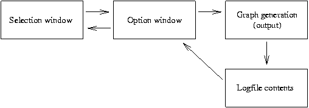
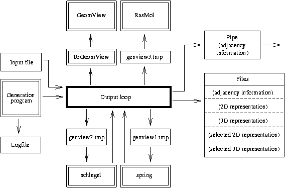

Up : Main
Prev : Tour de CaGe
Next : Generation programs
CaGe V0.3
Main program loop and external programs

The figure shows the main program loop. The option window
can be one out of five different option windows, one for each graph generation
program.

Data flow during graph generation
For each graph generation process various external programs are called. The figure
gives an overview. Each arrow indicates data flowing from
one program or file to another. In the figure , programs are
indicated by either their names or by "pipe" and surrounded by double--line
rectangles while files are
indicated by either their names or their contents and surrounded by
single--line rectangles. During one graph generation process, some temporary
files named "CaGex.tmp" are created (where x=
1,2,3). These files can
be deleted after a generation process has finished. The same holds for other
temporary files which might be created by graph generation programs
(e.g. tubetype).
The program spring computes 3D representations and the program
spring computes 2D representations. The programs RasMol
and GeomView are used to show the 3D representations on the display.
The pipe connects CaGe with another external program which receives the
adjacency information. This program can be chosen by the user.
If you click
the "Quit"--button in the main window while a graph generation
process is running,
not only CaGe, but all external programs which CaGe has called will be
stopped simultaneously. The only exceptions are:
GeomView must be stopped by the user.
The pipe program is not stopped automatically. However, the pipe is
closed, and this usually means that the pipe program will finish soon.
If you click
the "Go to background"--button while a graph generation process
is running, then RasMol will be stopped (
if running) and the Schlegel
output window will be closed (if open) so that no more graphical output is
supported (furthermore, the output panel will be closed). However, the graph
generation process will continue in the background, and CaGe will continue
writing output into the destination files or into the pipe. As soon as the
graph generation program will have finished, CaGe will be stopped.
If you click
the "Go to background"--button while no graph generation process
is running, then CaGe will be stopped as if the "Quit"--button had been
clicked.